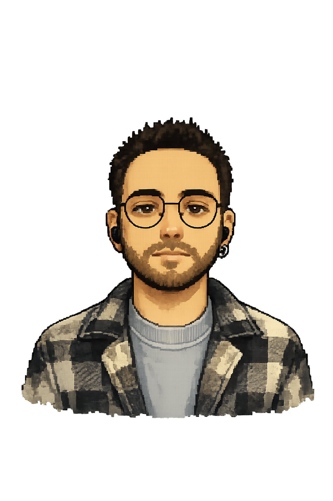

COMPUTER ENGINEER • GAME DEVELOPER • MUSICIAN
> Computer Engineering graduate from Balıkesir University, focused on game development, audio design, and system architecture.
> Experienced in developing mobile and desktop games with Unity; currently deep-diving into Unreal Engine 5 & C++.
> Hands-on experience with C#, .NET, and SQLite for custom enterprise database & ERP solutions.
> Lifelong musician and guitarist, combining technical programming logic with creative sound design.
> Status: Open to work (Remote / Hybrid / On-site opportunities).
> education: B.S. in Computer Engineering — Balıkesir University
> game dev: Unreal Engine 5, Unity, C++, C#, Blueprints
> software & db: .NET, SQLite, Git, GitHub
> audio & music: Guitarist, Cubase, Audio Design
> github: github.com/kagankurubas